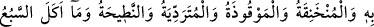
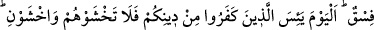
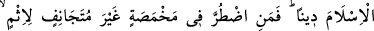
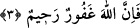

YENİLMESİ HARAM
OLAN HAYVANLAR
3- Leş, kan, domuz eti, Allah’tan başkası adına boğazlanan, boğulmuş, (taş, ağaç
vb. ile) vurulup öldürülmüş, yukarıdan yuvarlanıp ölmüş, boynuzlanıp ölmüş
(hayvanlar ile) yırtıcı hayvanların yediği hayvanlar –ölmeden yetişip kestikleriniz
müstesnâ-, dikili taşlar (putlar) üzerine boğazlanmış hayvanlar ve fal oklarıyle
kısmet aramanız size haram kılındı. Bunlar yoldan çıkmaktır. Bugün kâfirler, sizin
dîninizden (onu yok etmekten) ümit kesmişlerdir. Artık onlardan korkmayın,
benden korkun. Bugün sizin için dîninizi kemâle erdirdim, size nîmetimi
tamamladım ve sizin için din olarak İslâm’ı beğendim. Kim gönülden günâha
yönelmiş olmamak üzere açlık hâlinde dara düşerse (haram etlerden yiyebilir).
Çünkü Allah çok bağışlayıcı ve esirgeyicidir.
Size “Leş,” boğazlanmadan ölen hayvanın eti haram kılındı. Yani haram olan bunu
yemenizdir. Çünkü haramlık ve helallik aynlarla değil, fiillerle ilgilidir. Yani haram
olan ölü hayvanın eti değil, onu yemektir. Leş, boğazlanmadan ruhu bedeninden ayrılan
hayvana denir.
“Kan”, yani akıtılmış kan haram kılındı. Yani hayvanların damarlarındaki kan
haramdır, yoksa ciğerler ve dalakta donup kalan kan değil. Câhiliyye döneminde
insanlar, kanı bağırsaklara doldurup kızartıyorlar ve onun hacamat yapılan kimse için
haram olmadığını söylüyorlardı.
“Domuz eti”nin ise kendisi haramdır. Onun haramlığı leş olmasına bağlı değildir.
Boğazlanarak öldürülen bir domuzun eti de haramdır. Köpek ve sair yırtıcı hayvanların
adlarının burada tek tek sayılmayıp da sâdece domuz etinin haramlığının zikredilmesinin
hikmeti, birçok küfür ehlinin domuz eti yemeyi alışkanlık hâline getirmiş olmalarıdır.
Bu sebeple hüküm, domuz etinin haramlığında tahsis edilmiştir. Etlerinin yenilmesi